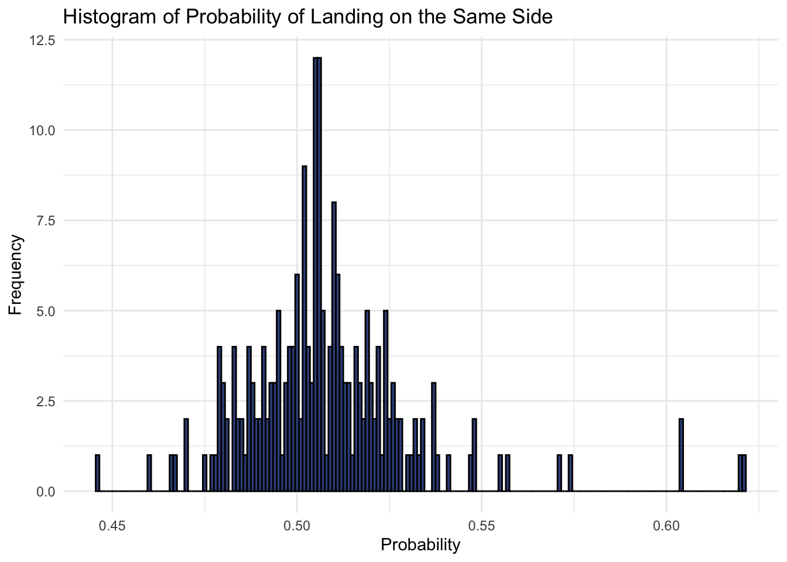
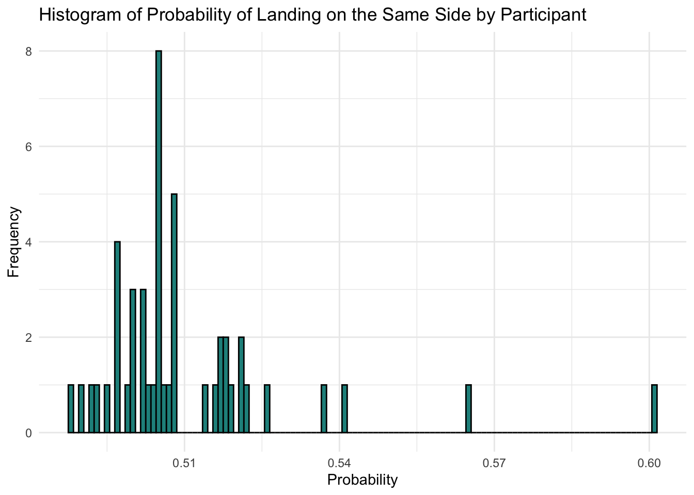
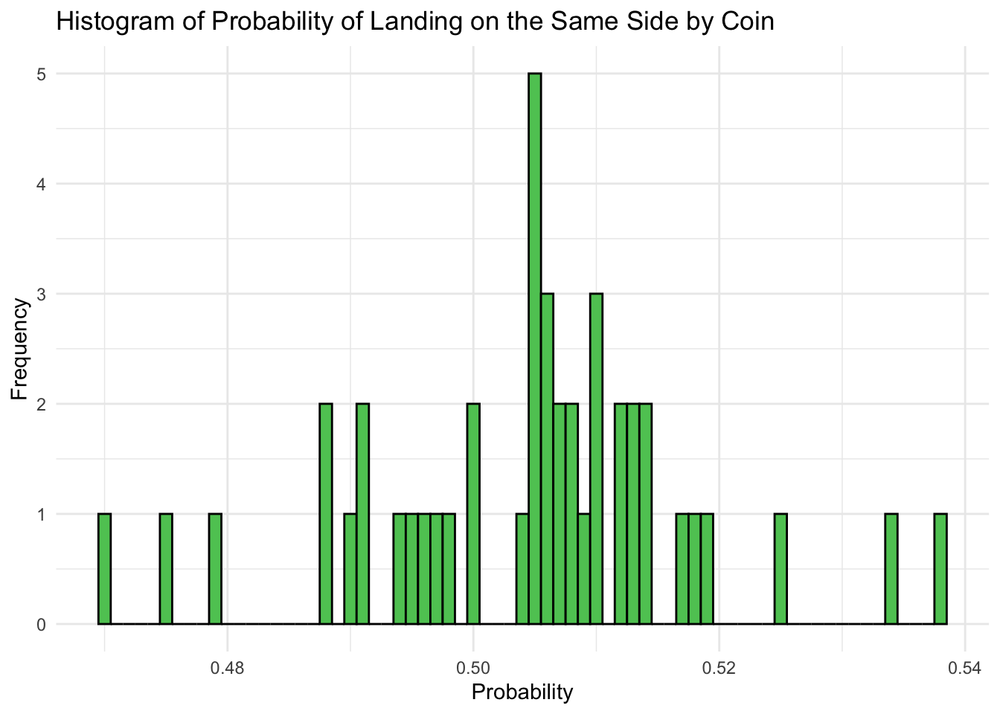
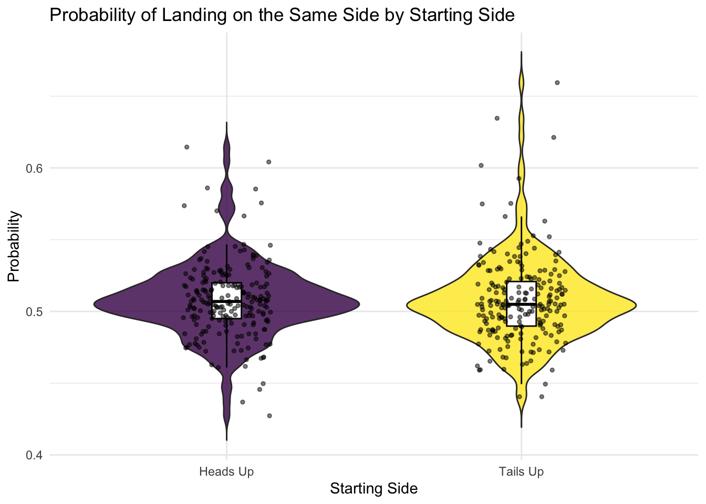

Regression Methods Project
1. Introduction and Exploratory Data Analysis
A recent paper (winner of the 2024 IgNobel Prize in Probability) analyzed over 350,000 coin flips to investigate the phenomenon that a coin starting heads-up tends to land heads-up with a probability slightly above 0.5, around 0.51, and similarly for tails-up. While the original paper adopted a Bayesian framework, our goal here is to employ frequentist regression methods to explore this possible bias and the factors that might influence it—such as participant-specific flipping techniques, coin characteristics, and the coin’s starting orientation.
State Objectives:
- Clearly define the aims of your analysis.
Outline:
- Provide a roadmap of your report’s structure.
Data Description
The dataset (in data-agg.csv) contains aggregated results from an experiment involving 48 participants flipping 211 different coins. Each row corresponds to the outcomes of flipping a specific coin by a single participant under two starting orientations: heads-up and tails-up. The columns are:
heads_heads: Number of flips that started heads-up and ended heads-up.
tails_heads: Number of flips that started tails-up and ended heads-up.
N_start_heads_up: Total flips that started heads-up.
N_start_tails_up: Total flips that started tails-up.
person: Participant identifier.
coin: Coin identifier.
We define for each row:
- $ = N_{} - $
- $ = N_{} - $
- $ = $
The overall interest lies in the extent to which \(\text{prob_same_side}\) exceeds 0.50, and whether this bias depends on the participant, coin, or starting orientation. Our analysis begins with studying the patterns in the data to inform modeling.
Overall Probability of Landing on the Same Side
To assess the overall bias, we first compute how often the coin ends on the same side it started.
# A tibble: 1 × 3
mean_prob_same_side median_prob_same_side sd_prob_same_side
<dbl> <dbl> <dbl>
1 0.508 0.506 0.0235
One Sample t-test
data: df$prob_same_side
t = 5.0947, df = 210, p-value = 7.765e-07
alternative hypothesis: true mean is not equal to 0.5
95 percent confidence interval:
0.5050585 0.5114438
sample estimates:
mean of x
0.5082511 From these results, we find a mean probability of about 0.508, slightly exceeding 0.5. A one-sample t-test against 0.5 indicates a statistically significant difference \((p< 0.05)\). Although the magnitude of this effect is small, it suggests a bias toward coins landing on the same side they started.
We visualize the distribution of these probabilities in Figure 1.

Figure 1: Histogram of the probability of landing on the same side across all coins and participants.
Most probabilities cluster around 0.5, but the distribution leans slightly to the right, reflecting the small bias observed. A few outliers exceed 0.6, which we will explore further.
Participant-Level Analysis
Next, we examine how this probability varies by participant. Differences in flipping technique or style could drive variation at the individual level.
We sum heads-up and tails-up flips by participant to obtain
$ p_i = $
where \((\text{heads_heads})_i\) is the total number of heads outcomes from heads-up starts for participant \(i\), etc.
# A tibble: 1 × 3
mean_prob median_prob sd_prob
<dbl> <dbl> <dbl>
1 0.510 0.505 0.0192The mean participant-level probability is around 0.510, slightly higher than the overall mean. This minor increase above the grand mean suggests participants differ in their flipping styles, possibly through differences in technique or consistency. This is illustrated in Figure 2.

Figure 2: Histogram of Probability of Landing on the Same Side by Participant
Although many participants cluster near 0.5, there are some notable outliers, reinforcing the notion that participant-specific effects could be important in modeling. We identify outliers by checking which participants’ probabilities lie beyond two standard deviations from the mean.
# A tibble: 2 × 8
person total_heads_heads total_tails_tails total_heads_up total_tails_up
<fct> <dbl> <dbl> <dbl> <dbl>
1 JanYang 510 446 877 814
2 TianqiPeng 780 902 1341 1459
# ℹ 3 more variables: total_same_side <dbl>, total_flips <dbl>,
# prob_same_side <dbl>Coin-Level Analysis
We then group flips by each coin to see whether some coins inherently land on the same side more frequently. Analogously, we compute
\(q_j = \frac{(\text{heads_heads})_j + (\text{tails_tails})_j}{(\text{total_flips})_j}\)
where \((\text{heads_heads})_j\) denotes the total number of heads outcomes from heads-up starts for coin $j$, etc.
# A tibble: 1 × 3
mean_prob median_prob sd_prob
<dbl> <dbl> <dbl>
1 0.504 0.506 0.0135The mean coin-level probability is about 0.504, with smaller overall variability compared to participants, as shown in Figure 3.

Figure 3: Histogram of the probability of landing on the same side by coin.
Coin-level probabilities remain tightly grouped around 0.5. This finding indicates that, on average, coin characteristics may not strongly affect the outcome, at least not to the same extent as participant-specific effects. Outliers were identified for coins with probabilities exceeding two standard deviations from the mean.
# A tibble: 4 × 8
coin total_heads_heads total_tails_tails total_heads_up total_tails_up
<fct> <dbl> <dbl> <dbl> <dbl>
1 0.01GBP 235 240 497 503
2 0.02EUR 78 63 157 143
3 0.50SGD 808 688 1452 1329
4 1MXN 2215 2292 4177 4257
# ℹ 3 more variables: total_same_side <dbl>, total_flips <dbl>,
# prob_same_side <dbl>To further investigate, we analyzed person/coin combinations to explore whether specific participant-coin interactions exhibit unusual outcomes.
# Calculate probabilities for person/coin combinations
person_coin_probs <- df %>%
group_by(person, coin) %>%
summarise(prob_same_side = mean(prob_same_side, na.rm = TRUE), .groups = "drop")
# Identify person/coin combination outliers
person_coin_outliers <- person_coin_probs %>%
filter(prob_same_side > mean(prob_same_side) + 2 * sd(prob_same_side) |
prob_same_side < mean(prob_same_side) - 2 * sd(prob_same_side))
print(person_coin_outliers)# A tibble: 9 × 3
person coin prob_same_side
<fct> <fct> <dbl>
1 FranziskaAssion 1EUR 0.557
2 JanYang 0.50EUR 0.604
3 JasonNak 0.50EUR 0.46
4 MagdaMatetovici 1CAD 0.62
5 TianqiPeng 0.20EUR 0.621
6 TianqiPeng 0.50EUR 0.604
7 TianqiPeng 1EUR 0.574
8 XiaochangZhao 0.50SGD 0.571
9 XiaoyiLin 0.50EUR 0.446TianqiPeng and JanYang were identified as outlier participants.
**maybe say something else??? lol im tired and not so sure**
Effect of Starting Side
Finally, we explore whether starting the coin heads-up vs. tails-up alters the likelihood of ending on the same side. We compare:
\(p_{11}=P(Heads→Heads)\)
\(p_{00}=P(Tails→Tails)\)
# A tibble: 1 × 4
mean_prob_heads_to_heads mean_prob_tails_to_tails sd_prob_heads_to_heads
<dbl> <dbl> <dbl>
1 0.508 0.508 0.0257
# ℹ 1 more variable: sd_prob_tails_to_tails <dbl>The results indicate both heads-up and tails-up flips have a mean probability of about 0.508 of landing on the same side. A t-test reveals no significant difference between the two groups, implying that “heads-up” vs. “tails-up” starts do not systematically alter the bias once participant and coin factors are averaged out.
ive been thinking of how davison said hypothesis tests are overused is this one of those cases? or is it a reasonable test? i think so but im also overthinking
# A tibble: 2 × 3
starting_side mean_prob sd_prob
<chr> <dbl> <dbl>
1 Heads Up 0.508 0.0257
2 Tails Up 0.508 0.0299
Welch Two Sample t-test
data: probability by starting_side
t = 0.091768, df = 410.93, p-value = 0.9269
alternative hypothesis: true difference in means between group Heads Up and group Tails Up is not equal to 0
95 percent confidence interval:
-0.005086409 0.005584567
sample estimates:
mean in group Heads Up mean in group Tails Up
0.5079109 0.5076618 A violin plot (Figure 4) shows the distribution of these probabilities:

Figure 4: Violin plot of the probability of landing on the same side by starting side.
Both distributions are centered around 0.508, with comparable spread, suggesting no notable systematic difference between starting heads-up or tails-up. Some outliers in each group do appear, which may reflect unique participant behaviors or chance fluctuations.
# A tibble: 21 × 2
# Groups: starting_side [2]
starting_side probability
<chr> <dbl>
1 Heads Up 0.446
2 Heads Up 0.570
3 Tails Up 0.441
4 Tails Up 0.602
5 Tails Up 0.575
6 Heads Up 0.615
7 Tails Up 0.593
8 Heads Up 0.604
9 Tails Up 0.635
10 Heads Up 0.585
# ℹ 11 more rowsSummary of EDA Findings
Slight Overall Bias: The mean probability of landing on the same side is 0.508, slightly above 0.5, indicating a modest but statistically significant bias.
Participant Variability: A higher mean (0.510) and greater spread among participants highlight the importance of participant-specific effects. The outliers indicate certain participants might be flipping coins in a non-random manner.
Minimal Coin Influence: Coin-level probabilities are tightly clustered around 0.5, suggesting coin characteristics may not play a major role ompared to participant influences —at least in this aggregated dataset.
Starting Side: Heads-up or tails-up leads to virtually the same probability (0.508), indicating little difference in bias by orientation.
These observations will guide the model-building phase. In particular, participant effects seem important, whereas coin effects appear weaker. Although starting side does not show a strong effect overall, we may still retain it in our models to capture any subtle differences.
3. Analysis
Building upon the insights from our EDA, we proceed to model the probability of a coin landing on the same side using generalized linear models (GLMs). Given the binary nature of the outcome (landing on the same side or not), logistic regression is an appropriate choice. We begin with a simple model and later incorporate hierarchical structures to account for variability.
Simple Logistic Regression Model
As a first step, we fit the simplest possible logistic model, treating all flips (aggregated in df) as independent Bernoulli trials with a single intercept term. Conceptually, this model estimates a single probability $p$ that a flip lands heads, irrespective of participant or coin. Though extremely simplistic, it provides a baseline for more complex models.
Let \(Y\_{ij}\) denote the number of same-side outcomes for the \(i\)-th participant-coin pair under starting orientation \(j\), and let \(m_{ij}\) represent the total flips under these conditions. A simple logistic regression assumes: \(\text{logit}\bigl(P(Y_{ij} = 1)\bigr) = \beta_0\) where \(\beta_0 \in \mathbb{R}\) is the log-odds of landing on the same side, irrespective of participant, coin, or starting orientation. The likelihood for \(\beta_0\) is: $ L(0) = ^{Y{ij}} (1 - )^{m_{ij} - Y_{ij}}$ where \(\pi = \frac{\exp(\beta_0)}{1 + \exp(\beta_0)}\). The maximum likelihood estimate $0$ is obtained by solving $ {0} {i,j} Y_{ij} () + (m_{ij} - Y_{ij}) (1 - )$
Call:
glm(formula = cbind(heads_heads, N_start_heads_up - heads_heads) ~
1, family = binomial, data = df)
Coefficients:
Estimate Std. Error z value Pr(>|z|)
(Intercept) 0.031366 0.004783 6.558 5.44e-11 ***
---
Signif. codes: 0 '***' 0.001 '**' 0.01 '*' 0.05 '.' 0.1 ' ' 1
(Dispersion parameter for binomial family taken to be 1)
Null deviance: 284.28 on 210 degrees of freedom
Residual deviance: 284.28 on 210 degrees of freedom
AIC: 1739.6
Number of Fisher Scoring iterations: 3